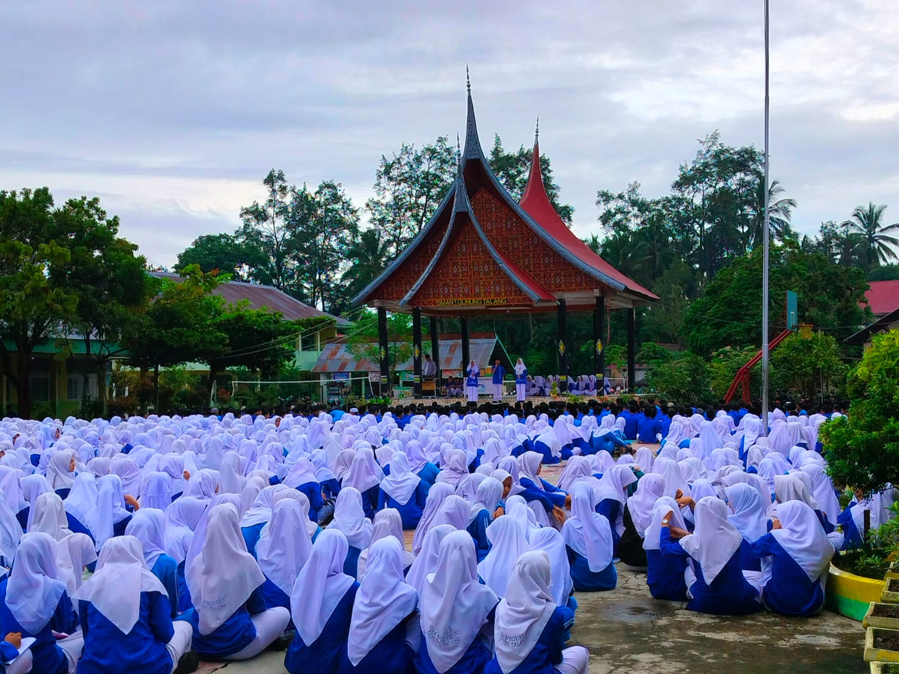
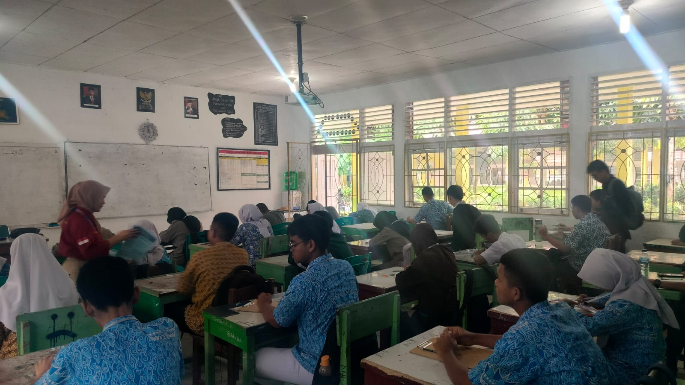

MIPA
Matematika dan Ilmu Pengetahuan Alam. Peminatan bagi siswa yang mendalami sains, penelitian, dan teknologi.
- Matematika Lanjut
- Fisika
- Kimia
- Biologi
- Informatika
Tiga program peminatan yang tersedia untuk siswa kelas X hingga XII.


Matematika dan Ilmu Pengetahuan Alam. Peminatan bagi siswa yang mendalami sains, penelitian, dan teknologi.
Ilmu Pengetahuan Sosial. Peminatan bagi siswa yang mendalami ekonomi, geografi, dan kehidupan sosial masyarakat.
Peminatan bagi siswa yang mendalami bahasa Inggris dan komunikasi lintas budaya.
| Tingkat | Laki-laki | Perempuan | Jumlah Siswa |
|---|---|---|---|
| Kelas X | 204 | 250 | 454 |
| Kelas XI | 156 | 227 | 383 |
| Kelas XII | 147 | 246 | 393 |
| Total | 507 | 723 | 1230 |